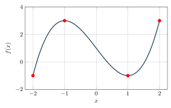
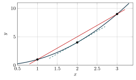
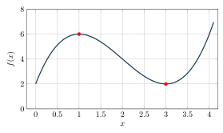
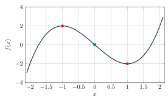
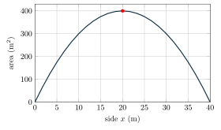
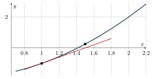
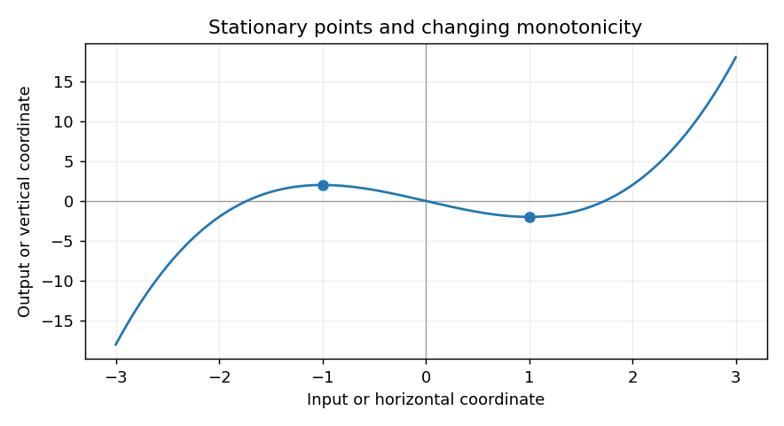

Applications of Derivatives
Chapter overview. The derivative is more than a procedure for finding slopes. Its sign predicts increase and decrease; its second derivative reveals bending; its zeros identify candidates for extrema; and its local linearization yields algorithms for solving equations. This chapter builds a connected story from mathematical reasoning to modeling and computation. Every software experiment is preceded by a mathematical prediction, and every numerical result is interpreted rather than merely reported. Learning goals. Students will distinguish local and absolute extrema; prove and apply the extreme value and mean value theorems; analyze monotonicity and concavity; sketch curves from derivative information; evaluate appropriate indeterminate limits; formulate constrained optimization models; implement and diagnose Newton’s method; and connect antiderivatives with families of solutions to differential equations. Prerequisites. Limits, continuity, derivatives, chain/product/quotient rules, and basic logarithmic and exponential functions from Chapters 1–3.
Visual concept investigation
Critical points are candidates, not conclusions
The condition \(f\prime(c)=0\) identifies a horizontal tangent, not necessarily an extremum. A function may have a stationary inflection point. To justify an optimum, combine domain information with the sign of the derivative, endpoint checks, or a suitable theorem.

Guided investigation. Compare \(f(x)=x^3\) and \(g(x)=x^2\) at \(x=0\). Both have zero derivative there. Why does only one have a local minimum?
Interactive investigation: Box optimization
Extreme values of functions
A temperature curve has a highest daily reading; a production process may have a least-cost operating point. Both are examples of extreme values. It matters whether the comparison is made against all permissible inputs or only nearby inputs.
Definition — Absolute and local extrema. A function \(f\) has an absolute maximum at \(c\) in its domain \(D\) if \(f(c)\ge f(x)\) for every \(x\in D\). It has an absolute minimum if \(f(c)\le f(x)\) for every \(x\in D\). A local maximum at \(c\) means \(f(c)\ge f(x)\) for every domain point \(x\) sufficiently close to \(c\); a local minimum reverses the inequality.
Theorem — Extreme value theorem. If \(f\) is continuous on a closed bounded interval \([a,b]\), then \(f\) attains both an absolute maximum and an absolute minimum on that interval.
The hypotheses are sufficient, not necessary. For example, \(f(x)=x\) on \((0,1)\) has neither endpoint value available, so it does not attain its supremum or infimum. By contrast, \(f(x)=x^2\) on \(\mathbb R\) attains a minimum despite the unbounded domain.
Definition — Critical number. A number \(c\) in the domain of \(f\) is a critical number if \(f'(c)=0\) or \(f'(c)\) does not exist.
Theorem — Fermat’s theorem. If \(f\) has a local extremum at an interior point \(c\) and \(f'(c)\) exists, then \(f'(c)=0\).
Proof. At a local maximum, for small \(h>0\) the quotient \([f(c+h)-f(c)]/h\le0\); for small \(h<0\) it is \(\ge0\). If the two-sided limit exists, it must be both nonpositive and nonnegative, hence zero. A local minimum follows by reversing signs.
The converse is false: \(f(x)=x^3\) has \(f'(0)=0\) but no extremum at zero. Also, a local extremum may occur at a nondifferentiable point, as for \(|x|\) at zero.
Example — Closed-interval method. Determine the absolute extrema of \(f(x)=x^3-3x+1\) on \([-2,2]\).
Solution. \(f'(x)=3x^2-3=3(x-1)(x+1)\). The interior critical numbers are \(-1\) and \(1\). Evaluate at the candidates and endpoints: \[\begin{array}{c|rrrr}x&-2&-1&1&2\\\hline f(x)&-1&3&-1&3\end{array}\] The absolute maximum value is \(3\), attained at \(x=-1,2\); the absolute minimum is \(-1\), attained at \(x=-2,1\). Listing all locations is important.

Remark. A practical checklist: verify continuity on \([a,b]\); compute \(f'\); identify all interior critical numbers, including points where \(f'\) is undefined; evaluate the function at every candidate and both endpoints; compare function values, not derivative values.
Example — When the theorem does not apply. Consider \(g(x)=1/x\) on \((0,1]\). Does it have absolute extrema?
Solution. \(g(1)=1\) is an absolute minimum. As \(x\to0^+\), \(g(x)\to\infty\), so no absolute maximum exists. The missing endpoint prevents a blanket use of the extreme value theorem.
The mean value theorem
The mean value theorem connects a change across an interval to an instantaneous rate somewhere inside it. If a cyclist travels 24 km in 2 hours, their average speed is 12 km/h; under differentiability assumptions, their instantaneous speed equals 12 km/h at least once.
Theorem — Rolle’s theorem. If \(f\) is continuous on \([a,b]\), differentiable on \((a,b)\), and \(f(a)=f(b)\), then there is some \(c\in(a,b)\) for which \(f'(c)=0\).
Proof. The extreme value theorem guarantees a maximum and minimum. If \(f\) is constant, every interior derivative is zero. Otherwise, at least one extreme value occurs at an interior point because the endpoint values agree. Fermat’s theorem then gives \(f'(c)=0\).
Theorem — Mean value theorem. If \(f\) is continuous on \([a,b]\) and differentiable on \((a,b)\), then for at least one \(c\in(a,b)\), \[f'(c)=\frac{f(b)-f(a)}{b-a}.\]
Proof. Define \(\ell(x)=f(a)+[f(b)-f(a)](x-a)/(b-a)\), the secant line, and let \(h(x)=f(x)-\ell(x)\). Then \(h(a)=h(b)=0\). Rolle’s theorem yields \(h'(c)=0\), which rearranges to the stated formula.
Example — Locating the guaranteed slope. Let \(f(x)=x^2\) on \([1,3]\). Find the point guaranteed by the theorem.
Solution. The secant slope is \((9-1)/(3-1)=4\). Since \(f'(x)=2x\), solve \(2c=4\) to obtain \(c=2\), inside \((1,3)\).

Theorem — Zero derivative implies constant. If \(f'(x)=0\) for all \(x\) in an interval, then \(f\) is constant on that interval.
Proof. For any \(a<b\) in the interval, the mean value theorem gives \(f(b)-f(a)=f'(c)(b-a)=0\).
Example — Bounding an unknown change. Suppose \(1\le f'(t)\le3\) for \(0\le t\le5\). Bound \(f(5)-f(0)\).
Solution. By the mean value theorem, \(f(5)-f(0)=5f'(c)\) for some \(c\in(0,5)\), so \(5\le f(5)-f(0)\le15\).
Remark. The theorem asserts existence, not uniqueness. Some functions have multiple points where the tangent slope equals the secant slope. Discontinuity or a corner can invalidate the hypotheses.
Monotonicity and the first derivative test
Theorem — Derivative sign and monotonicity. If \(f'(x)>0\) throughout an interval, \(f\) is strictly increasing there. If \(f'(x)<0\), \(f\) is strictly decreasing there.
Proof. For \(a<b\) in the interval, the mean value theorem gives \(f(b)-f(a)=f'(c)(b-a)\). Its sign agrees with the sign of \(f'(c)\).
Theorem — First derivative test. Suppose \(c\) is a critical number and \(f\) is continuous at \(c\). If \(f'\) changes from positive to negative at \(c\), then \(f\) has a local maximum there. If \(f'\) changes from negative to positive, then \(f\) has a local minimum. If the sign does not change, the test does not establish an extremum.
Example — Sign chart. Analyze \(f(x)=x^3-6x^2+9x+2\).
Solution. \(f'(x)=3x^2-12x+9=3(x-1)(x-3)\). Its signs are positive for \(x<1\), negative for \(1<x<3\), and positive for \(x>3\). Therefore \(f\) increases on \((-\infty,1)\), decreases on \((1,3)\), and increases on \((3,\infty)\). The local maximum is \(f(1)=6\) and the local minimum is \(f(3)=2\).

Example — A stationary point that is not an extremum. Investigate \(f(x)=x^3\) at zero.
Solution. \(f'(x)=3x^2\ge0\) on both sides of zero, so the function is increasing through the stationary point. There is no sign change and no local extreme value.
Interpretation checkpoint. The sign of \(f'\) describes whether the output rises or falls as input increases. The magnitude \(|f'|\) measures how rapidly; these are distinct questions. A function can be increasing while its rate of increase is slowing.
Concavity, inflection points, and curve sketching
A graph can be rising while bending downward, or falling while bending upward. The second derivative captures this change in slope.
Definition — Concavity. A differentiable function is concave upward on an interval when its derivative is increasing there, and concave downward when its derivative is decreasing. Where \(f''\) exists, \(f''>0\) implies concave upward and \(f''<0\) implies concave downward.
Definition — Inflection point. An inflection point is a point on a continuous curve where its concavity changes. A zero of \(f''\) is only a candidate; it is not sufficient by itself.
Theorem — Second derivative test. If \(f'(c)=0\) and \(f''(c)>0\), then \(f\) has a strict local minimum at \(c\). If \(f''(c)<0\), then \(f\) has a strict local maximum. If \(f''(c)=0\), the test is inconclusive.
Example — Full curve analysis. Study \(f(x)=x^3-3x\).
Solution. \(f'(x)=3(x^2-1)\) vanishes at \(x=\pm1\). The derivative is positive outside \([-1,1]\) and negative between, so the graph has a local maximum at \((-1,2)\) and a local minimum at \((1,-2)\). Next, \(f''(x)=6x\) changes from negative to positive at zero, giving an inflection point \((0,0)\). The function is concave downward for \(x<0\) and upward for \(x>0\).

Example — Why \(f''(c)=0\) is inconclusive. Compare \(f(x)=x^4\) and \(g(x)=x^3\) at zero.
Solution. Both have zero first and second derivatives at zero. Yet \(x^4\) has a strict local minimum and no concavity change, whereas \(x^3\) has an inflection point and no extremum. Sign analysis resolves both cases.
A reliable curve-sketching workflow
Start with the domain, intercepts, and symmetry. Identify discontinuities and asymptotes; locate critical numbers and intervals of monotonicity using \(f'\); locate possible inflection points and intervals of concavity using \(f''\); compute selected values and check end behavior. A graphing program can help verify the result, but it should not replace the sign analysis.
Indeterminate forms and l’Hopital’s rule
Expressions of the form \(0/0\) or \(\infty/\infty\) do not determine a limit by themselves. Different functions producing the same formal expression can have entirely different limits.
Theorem — L’Hopital’s rule, basic form. Suppose \(f\) and \(g\) are differentiable on a punctured interval about \(a\), \(g'(x)\ne0\) there, and \(f(x),g(x)\to0\) as \(x\to a\) (or both diverge in magnitude). If \(\lim_{x\to a}f'(x)/g'(x)=L\) exists as a finite or infinite limit, then \(\lim_{x\to a}f(x)/g(x)=L\). Corresponding one-sided and infinite-endpoint versions hold under appropriate hypotheses.
Remark. Before differentiating, confirm an indeterminate quotient of type \(0/0\) or \(\infty/\infty\). The rule differentiates the numerator and denominator separately; it does not apply the quotient rule to the whole fraction. If the derivative quotient still has an eligible indeterminate form, the rule may be repeated.
Example — A removable singularity. Evaluate \(\lim_{x\to0}(e^x-1)/x\).
Solution. Direct substitution yields \(0/0\). Differentiating numerator and denominator gives \(\lim_{x\to0}e^x/1=1\). Independently, this is the derivative of \(e^x\) at zero.
Example — Repeated application. Find \(\lim_{x\to0}(1-\cos x)/x^2\).
Solution. The first application gives \(\lim_{x\to0}\sin x/(2x)\), still \(0/0\). A second gives \(\lim_{x\to0}\cos x/2=1/2\).
Example — Transforming a product. Find \(\lim_{x\to0^+}x\ln x\).
Solution. The product has the form \(0\cdot(-\infty)\), not an eligible quotient. Rewrite as \((\ln x)/(1/x)\), a \(-\infty/\infty\) quotient. L’Hopital’s rule gives \(\lim_{x\to0^+}(1/x)/(-1/x^2)=\lim_{x\to0^+}(-x)=0\).
Example — When algebra is better. Evaluate \(\lim_{x\to2}(x^2-4)/(x-2)\).
Solution. Factoring produces \(x+2\) for \(x\ne2\), hence the limit is \(4\). L’Hopital’s rule also works, but algebra reveals the removable discontinuity directly.
Common errors. Applying the rule to \(1/0\); ignoring a one-sided domain restriction; claiming that \(f'/g'\) has a limit without checking; treating \(\infty-\infty\) as a quotient without transforming it; and using numerical cancellation near zero as if it were an exact limit.
Applied optimization
Optimization begins with a decision variable and an objective, not with differentiation. The derivative enters only after the model, feasible domain, and units are clear.
A modeling protocol
State the decision and identify the quantity to maximize or minimize.
Draw and label a diagram or define the relevant quantities.
Express the objective in terms of one independent variable using constraints.
Determine the physically feasible domain.
Find all interior critical points and relevant endpoints.
Compare objective values and interpret the result with units and model limitations.
Example — Maximum area with fixed perimeter. A rectangular garden has 80 meters of fencing. Find its dimensions for maximum area.
Solution. Let the sides be \(x\) and \(y\) meters. The constraint \(2x+2y=80\) gives \(y=40-x\) and \(0<x<40\). The area is \(A(x)=x(40-x)=40x-x^2\). Then \(A'(x)=40-2x=0\) at \(x=20\). Since \(A''(x)=-2<0\), the area is maximized when both dimensions are 20 m, giving \(400\ \mathrm{m}^2\). At the limiting degenerate endpoints, area approaches zero.

Example — An open-top box. A \(30\) cm by \(20\) cm sheet has squares of side \(x\) cut from each corner, then is folded into a box. Maximize its volume.
Solution. The height is \(x\) and the base is \((30-2x)\times(20-2x)\), so \[V(x)=x(30-2x)(20-2x)=600x-100x^2+4x^3,\quad0<x<10.\] The derivative is \(V'(x)=600-200x+12x^2=4(3x^2-50x+150)\). Solving gives \(x=(25\pm5\sqrt7)/3\). Only \(x=(25-5\sqrt7)/3\approx3.924\) cm is feasible; the other root exceeds 10. The derivative changes from positive to negative at this feasible critical point, giving the maximum. The endpoints approach zero volume.
Example — Revenue and marginal reasoning. Suppose demand is modeled by \(p(q)=120-2q\) dollars per unit, for \(0\le q\le60\). Determine the revenue-maximizing quantity.
Solution. Revenue is \(R(q)=qp(q)=120q-2q^2\), so \(R'(q)=120-4q=0\) at \(q=30\). Since \(R''=-4<0\), this maximizes revenue. The price is \(p(30)=60\) dollars and revenue is \(1800\) dollars. The model assumes demand follows the given line and ignores production costs; maximum revenue need not maximize profit.
Example — Least material for a cylindrical container. A closed cylinder must hold volume \(V_0>0\). Find the radius and height that minimize its surface area.
Solution. With \(\pi r^2h=V_0\), eliminate \(h=V_0/(\pi r^2)\) and obtain \(S(r)=2\pi r^2+2V_0/r\) for \(r>0\). Thus \(S'(r)=4\pi r-2V_0/r^2\). Setting this to zero gives \(r^3=V_0/(2\pi)\) and \(h=2r\). Since \(S''(r)=4\pi+4V_0/r^3>0\), this is a strict minimum; \(S\to\infty\) as \(r\to0^+\) or \(r\to\infty\), so it is global.
Newton’s method
To solve \(f(x)=0\), Newton’s method replaces the curve near a current guess \(x_n\) by its tangent line. The tangent’s \(x\)-intercept becomes the next guess.
Theorem — Newton iteration. When \(f\) is differentiable and \(f'(x_n)\ne0\), the tangent-line update is \[x_{n+1}=x_n-\frac{f(x_n)}{f'(x_n)}.\]
Proof. The tangent line at \((x_n,f(x_n))\) is \(y=f(x_n)+f'(x_n)(x-x_n)\). Set \(y=0\) and solve for \(x\).
Example — Square root of two. Use Newton’s method on \(f(x)=x^2-2\) with \(x_0=1\).
Solution. The update simplifies to \(x_{n+1}=(x_n+2/x_n)/2\). Then \(x_1=1.5\), \(x_2=1.4166667\), \(x_3\approx1.4142157\), and \(x_4\approx1.4142135624\). The true positive root is \(\sqrt2\approx1.4142135624\). The rapidly shrinking error illustrates local quadratic convergence.

Example — A dangerous starting value. Apply Newton’s method to \(f(x)=x^3-2x+2\) starting at \(x_0=0\).
Solution. Since \(f(0)=2\) and \(f'(0)=-2\), the first update is \(x_1=1\). At \(x_1=1\), \(f(1)=1\) and \(f'(1)=1\), so \(x_2=0\). The iteration cycles \(0,1,0,1,\ldots\) and does not converge. A small residual, a well-chosen starting value, and iteration safeguards matter.
Numerical safeguards
Never divide by a derivative that is zero or extremely small. Stop only after checking both step size and residual \(|f(x_n)|\); a small step alone can be misleading. Set a maximum iteration count and report failure rather than silently claiming convergence. For guaranteed bracketing when a sign change is available, bisection from Chapter 2 is often more robust, though usually slower.
Antiderivatives and the bridge to integration
Differentiation asks for the rate of change of a known function. An antiderivative reverses this question: which function could have produced a given rate?
Definition — Antiderivative. A function \(F\) is an antiderivative of \(f\) on an interval \(I\) if \(F'(x)=f(x)\) for every \(x\in I\).
Theorem — Antiderivatives differ by a constant. If \(F\) and \(G\) are antiderivatives of \(f\) on the same interval, then \(F(x)-G(x)=C\) for some constant \(C\).
Proof. The derivative of \(F-G\) is zero throughout the interval. The zero-derivative corollary of the mean value theorem implies \(F-G\) is constant.
Example — A family of antiderivatives. Find all antiderivatives of \(f(x)=6x^2-4x+3\).
Solution. Since the derivative of \(2x^3-2x^2+3x\) is \(6x^2-4x+3\), the complete family is \(F(x)=2x^3-2x^2+3x+C\). Verify by differentiating.
Example — Recovering position from velocity. A particle has velocity \(v(t)=3t^2-4t+1\) meters per second and position \(s(0)=5\) meters. Determine \(s(t)\).
Solution. An antiderivative is \(s(t)=t^3-2t^2+t+C\). The initial condition gives \(C=5\), hence \(s(t)=t^3-2t^2+t+5\). Differentiate to check that \(s'(t)=v(t)\).
Remark. The constant \(C\) represents information lost under differentiation. Initial conditions restore that information. The next chapters turn antiderivatives into a systematic theory of integration and accumulated change.
R computational laboratories
Each laboratory begins with a mathematical claim and uses R to test, visualize, or extend it. Code is provided as a single-language sequence rather than a side-by-side comparison. Base R is sufficient for these activities.
R Lab 1: Extreme values and derivative sign
Prediction. The function \(x^3-3x+1\) has absolute maximum \(3\) and minimum \(-1\) on \([-2,2]\).
f <- function(x) x^3 - 3*x + 1
fp <- function(x) 3*x^2 - 3
x <- seq(-2, 2, length.out = 401)
plot(x, f(x), type = "l", lwd = 2,
xlab = "x", ylab = "f(x)", main = "Extrema")
points(c(-2,-1,1,2), f(c(-2,-1,1,2)), pch = 19)
candidates <- c(-2,-1,1,2)
data.frame(x=candidates, value=f(candidates),
derivative=fp(candidates))Interpret. Compare the exact candidate values. Explain why a dense numerical grid alone cannot prove a global maximum.
R Lab 2: Mean value theorem
f <- function(x) x^2
slope <- (f(3)-f(1))/(3-1)
c_value <- slope/2
curve(f(x), from=0.5, to=3.5, lwd=2,
xlab="x", ylab="f(x)")
abline(a=-3, b=slope, col="red", lwd=2)
abline(a=-4, b=slope, col="blue", lty=2)
cat("Secant slope:", slope, " MVT point:", c_value, "\n")Interpret. Explain why the two lines have equal slopes but different intercepts.
R Lab 3: Concavity and inflection
f <- function(x) x^3 - 3*x
fp <- function(x) 3*x^2 - 3
fpp <- function(x) 6*x
x <- seq(-2,2,length.out=500)
par(mfrow=c(3,1), mar=c(3,4,2,1))
plot(x,f(x),type="l",main="Function")
plot(x,fp(x),type="l",main="First derivative"); abline(h=0,lty=2)
plot(x,fpp(x),type="l",main="Second derivative"); abline(h=0,lty=2)
par(mfrow=c(1,1))Interpret. Match sign intervals of \(f'\) and \(f''\) to the graph’s shape.
R Lab 4: Numerical cancellation in limits
h <- 10^(-seq(1,15,by=2))
naive <- (exp(h)-1)/h
stable <- expm1(h)/h
print(data.frame(h=h, naive=naive, stable=stable))Interpret. Compare errors relative to the exact
limit \(1\) and explain why
expm1 helps for small \(h\).
R Lab 5: Optimization by modeling
volume <- function(x) x*(30-2*x)*(20-2*x)
answer <- optimize(volume, interval=c(0,10), maximum=TRUE)
print(answer)
curve(volume(x), from=0, to=10, lwd=2,
xlab="Cut size (cm)", ylab="Volume (cm^3)")
abline(v=answer$maximum, col="red", lty=2)Interpret. Compare the numerical optimum to \((25-5\sqrt7)/3\) and explain why the larger algebraic root is inadmissible.
R Lab 6: Newton iteration with diagnostics
newton <- function(f, df, x0, tol=1e-10, maxit=30) {
x <- x0
for (k in seq_len(maxit)) {
fx <- f(x); dfx <- df(x)
if (!is.finite(fx) || !is.finite(dfx) || abs(dfx)<1e-12)
stop("Nonfinite value or derivative too small")
next_x <- x - fx/dfx
cat("iter",k,"x =",format(next_x,digits=12),
"residual =",format(abs(f(next_x)),digits=4),"\n")
if (abs(next_x-x)<tol && abs(f(next_x))<tol)
return(next_x)
x <- next_x
}
warning("Maximum iterations reached without convergence")
x
}
newton(function(x) x*x-2, function(x) 2*x, 1)Interpret. Try the cycling example \(f(x)=x^3-2x+2\) with \(x_0=0\) and explain the failure.
Python computational laboratories
These Python implementations revisit the same mathematical questions after the complete R sequence. The code uses NumPy and Matplotlib for arrays and graphs; SymPy is introduced when symbolic verification is useful.
Python Lab 1: Extreme values and derivative sign
import numpy as np
import matplotlib.pyplot as plt
f = lambda x: x**3 - 3*x + 1
fp = lambda x: 3*x**2 - 3
x = np.linspace(-2,2,401)
plt.plot(x,f(x),label="f(x)")
candidates = np.array([-2,-1,1,2])
plt.scatter(candidates,f(candidates),color="red")
plt.xlabel("x"); plt.ylabel("f(x)"); plt.legend(); plt.show()
for c in candidates:
print(f"x={c:.0f}, f(x)={f(c):.0f}, f'(x)={fp(c):.0f}")Python Lab 2: Mean value theorem
import numpy as np
import matplotlib.pyplot as plt
x = np.linspace(0.5,3.5,300)
secant_slope = (3**2-1**2)/(3-1)
c = secant_slope/2
plt.plot(x,x*x,label="f(x)=x^2")
plt.plot(x,4*x-3,label="secant")
plt.plot(x,4*x-4,"--",label="parallel tangent")
plt.legend(); plt.show()
print("MVT point:",c)Python Lab 3: Concavity and inflection
import numpy as np
import matplotlib.pyplot as plt
x = np.linspace(-2,2,400)
fig, ax = plt.subplots(3,1,figsize=(7,8))
for a,y,label in zip(ax,[x**3-3*x,3*x*x-3,6*x],
["f","f prime","f double prime"]):
a.plot(x,y); a.axhline(0,color="gray",linestyle="--")
a.set_title(label)
plt.tight_layout(); plt.show()Python Lab 4: Stable numerical limits
import numpy as np
h = 10.0**(-np.arange(1,16,2))
naive = (np.exp(h)-1)/h
stable = np.expm1(h)/h
for hi,a,b in zip(h,naive,stable):
print(f"h={hi:.1e} naive={a:.12f} stable={b:.12f}")Python Lab 5: Box optimization
import numpy as np
import matplotlib.pyplot as plt
x_star = (25-5*np.sqrt(7))/3
V = lambda x: x*(30-2*x)*(20-2*x)
x = np.linspace(0,10,300)
plt.plot(x,V(x)); plt.axvline(x_star,color="red",linestyle="--")
plt.xlabel("Cut size (cm)"); plt.ylabel("Volume (cm^3)")
plt.show()
print("Optimal cut:",x_star,"Maximum volume:",V(x_star))Python Lab 6: Newton iteration with diagnostics
def newton(f,df,x0,tol=1e-10,maxit=30):
x = float(x0)
for k in range(1,maxit+1):
fx, dfx = f(x), df(x)
if abs(dfx)<1e-12:
raise ArithmeticError("Derivative too small")
nxt = x-fx/dfx
print(f"iter {k}: x={nxt:.12f}, residual={abs(f(nxt)):.3e}")
if abs(nxt-x)<tol and abs(f(nxt))<tol:
return nxt
x = nxt
raise RuntimeError("Newton iteration did not converge")
root = newton(lambda x:x*x-2,lambda x:2*x,1)
print("Root:",root)Python Lab 7: Symbolic differentiation check
import sympy as sp
x = sp.symbols('x', positive=True)
S = 2*sp.pi*x**2 + 2*1000/x
print('Derivative:',sp.diff(S,x))
print('Second derivative:',sp.diff(S,x,2))
print('Stationary radius:',sp.solve(sp.diff(S,x),x))Cross-language reflection. Explain which parts of
the mathematics are independent of the programming language. Compare R’s
optimize routine to an analytic derivative test, and
distinguish a symbolic result from a numerical approximation.
Real-world applications and modeling discussions
Health sciences: concentration thresholds
Suppose a medication concentration is modeled by \(C(t)=18e^{-0.25t}\) mg/L for \(t\ge0\) hours. Its derivative \(C'(t)=-4.5e^{-0.25t}\) mg/(L h) is negative, so the concentration decreases. Its second derivative \(C''(t)=1.125e^{-0.25t}>0\) shows the decrease is slowing. If a clinical threshold is \(5\) mg/L, the crossing time solves \(18e^{-0.25t}=5\), hence \(t=4\ln(18/5)\approx5.12\) hours. This is a mathematical illustration, not a clinical dosing recommendation. Actual pharmacokinetic models may require multiple compartments and patient-specific parameters.
Environmental science: an optimal sampling window
A simplified sensor response may rise after an event and then decay: \(S(t)=Ate^{-kt}\) for \(t\ge0\) and constants \(A,k>0\). Differentiating gives \(S'(t)=Ae^{-kt}(1-kt)\), so the response is maximized at \(t=1/k\). The peak depends on the time scale \(1/k\) but not on the amplitude \(A\). The model assumes a single rise-decay pulse and neglects background variation.
Economics: maximizing profit rather than revenue
Suppose demand is \(p(q)=100-q\), production cost is \(C(q)=200+20q\), and \(0\le q\le100\). Revenue is \(R(q)=100q-q^2\), whereas profit is \(P(q)=R(q)-C(q)=80q-q^2-200\). The profit derivative \(P'(q)=80-2q\) vanishes at \(q=40\); \(P''(q)=-2\) confirms a maximum. Revenue alone is maximized at \(q=50\). This difference illustrates why choosing the right objective is a modeling decision, not a calculus trick.
Engineering: reliability of numerical roots
A nonlinear calibration equation may have a steep slope in one region and an almost flat slope elsewhere. Newton’s method is efficient near a simple root but sensitive to initial guesses. Before using it operationally, plot the function, check units, bracket a root if possible, and compare the residual to a scientifically meaningful tolerance. A root computed to ten decimal places may still be meaningless if the input measurements are accurate to only two significant figures.
Exercises
Instructions. Show mathematical reasoning before software output. Include units for applied problems; identify domains and hypotheses when invoking a theorem. For computational investigations, attach code, figures, and a brief interpretation.
Conceptual reasoning
Distinguish an absolute maximum from a local maximum; construct a graph illustrating each.
Explain why the extreme value theorem requires both a closed bounded interval and continuity in its stated form.
Give an example of a critical number that is not an extremum, and justify it.
Explain why the mean value theorem does not assert that the point \(c\) is unique.
Describe a function that increases while being concave downward.
Explain why \(f''(c)=0\) alone does not guarantee an inflection point.
Why must a quotient be indeterminate before applying l’Hopital’s rule?
Explain why a small Newton step does not always imply a small equation residual.
Explain the role of \(C\) in an antiderivative family.
Give a realistic reason an optimization model may not predict an actual optimum.
Extrema and the mean value theorem
Find absolute extrema of \(f(x)=x^2-4x+1\) on \([-1,5]\).
Find absolute extrema of \(f(x)=x^3-6x^2+9x\) on \([0,5]\).
Find all critical numbers of \(f(x)=x^{2/3}(x-3)\).
For \(f(x)=\sin x\) on \([0,\pi]\), identify a point satisfying the mean value theorem.
Find every \(c\) satisfying the mean value theorem for \(f(x)=x^3\) on \([-1,2]\).
Check whether Rolle’s theorem applies to \(f(x)=|x|\) on \([-1,1]\).
If \(2\le f'(x)\le5\) for \(1\le x\le4\), bound \(f(4)-f(1)\).
Prove that \(f(x)=x^5+x\) has at most one real zero.
Explain why \(f(x)=1/x\) on \([-1,1]\) does not satisfy the mean value theorem hypotheses.
Show that if \(f'(x)=g'(x)\) on an interval, then \(f-g\) is constant there.
Shape and limits
Analyze monotonicity and local extrema of \(f(x)=x^3-3x^2-9x\).
Analyze concavity and inflection points of \(f(x)=x^4-4x^3\).
Find intervals of increase and decrease for \(f(x)=x/(x^2+1)\).
Sketch \(f(x)=x^3-3x\) using derivative sign charts rather than a plotting device.
Determine whether \(x=0\) is an inflection point for \(f(x)=x^4\).
Evaluate \(\lim_{x\to0}(e^{2x}-1)/x\).
Evaluate \(\lim_{x\to0}(\sin x-x)/x^3\).
Evaluate \(\lim_{x\to\infty}(\ln x)/x\).
Evaluate \(\lim_{x\to0^+}x^2\ln x\).
Explain why \(\lim_{x\to0}1/x\) cannot be handled as a \(0/0\) limit.
Optimization and numerical methods
Find the rectangle of greatest area with perimeter \(120\) m.
Find the positive number minimizing \(x+16/x\).
A \(24\) by \(18\) cm sheet is folded into an open box; set up and solve the maximum-volume problem.
For \(p(q)=80-0.5q\) and \(C(q)=200+10q\), find the profit-maximizing feasible quantity.
Minimize the surface area of a closed cylinder with volume \(500\ \mathrm{cm}^3\).
Derive the Newton update for solving \(x^3-5=0\).
Carry out three Newton iterations for \(x^2-3=0\) starting at \(x_0=2\).
Show that Newton’s method cycles between \(0\) and \(1\) for \(x^3-2x+2\) starting at \(0\).
Find all antiderivatives of \(4x^3-6x+2\).
Given \(v(t)=2t+3\) and \(s(0)=10\), find \(s(t)\).
R and Python investigations
In R, compare exact and grid-based extrema for a polynomial on a closed interval.
In Python, plot \(f,f',\) and \(f''\) for a cubic and annotate critical points.
In both languages, estimate \(\lim_{h\to0}(e^h-1)/h\) and describe roundoff error.
Use R to numerically optimize an open-top box and compare with an analytic solution.
Use Python to compare Newton’s method from three starting values.
Change the tolerance in the Newton code and report iteration counts.
Construct a sign chart for a quartic and check its conclusions graphically.
Compare maximum revenue and maximum profit for a linear-demand model.
Investigate a concentration decay model with a threshold of your choosing.
Write a short explanation distinguishing exact algebraic roots from computed approximations.
Concluding chapter project: Designing a response system
Scenario. A laboratory sensor measures a pulse-shaped response after a controlled release. The response is approximated by \[S(t)=Ate^{-kt}+B,\qquad t\ge0,\] where \(A>0\) is an amplitude parameter, \(k>0\) is a decay-rate parameter, and \(B\ge0\) is a baseline. For an initial investigation, take \(A=12\), \(k=0.4\) h\(^{-1}\), and \(B=2\) response units. Treat this as a simulated teaching model rather than measured field data.
Part I: Mathematical model (25 points)
Interpret the units of all parameters and explain why the domain is \(t\ge0\).
Derive \(S'(t)\) and \(S''(t)\) using the product and chain rules.
Determine analytically the time and magnitude of the peak response.
Identify intervals of increase, decrease, concavity, and any inflection point.
Part II: R investigation (20 points)
Construct a labeled graph of \(S(t)\) on \(0\le
t\le15\) with the peak marked. Numerically maximize the function
using optimize; compare the numerical peak with your
analytic result. Implement Newton’s method to solve \(S(t)=5\) for a post-peak
threshold-crossing time. Explain how you selected the starting value and
how you checked the residual.
Part III: Python investigation (20 points)
Reproduce the plot and peak calculation in Python, implement the same Newton iteration, and compare outputs to R. Use SymPy to differentiate the model and verify the analytic expressions. Present a concise comparison table with units.
Part IV: Sensitivity and assumptions (20 points)
Repeat the analysis with \(k=0.3\) and \(k=0.6\) h\(^{-1}\) while holding \(A\) and \(B\) fixed. Explain how the peak time, peak magnitude, and post-peak threshold-crossing time change. Discuss why an exponential pulse might be unsuitable for repeated releases, delayed measurement, or variable background levels.
Part V: Communication (15 points)
Prepare a four-page technical report (excluding code appendix) containing a clearly stated question, mathematical derivations, two original figures, a table comparing R and Python results, and a limitations paragraph. Distinguish analytic conclusions from numerical evidence. Rubric. Mathematical derivations and interpretation: 25; reproducible R analysis: 20; reproducible Python analysis: 20; sensitivity and assumptions: 20; clarity and presentation: 15. Total: 100 points.
Chapter synthesis and self-assessment
The derivative unifies seemingly different questions: locating the highest value, proving a function rises, understanding how a graph bends, estimating an indeterminate limit, finding an efficient design, and computing a nonlinear root. In each case, begin with the mathematics and assumptions. Use visualizations to reason, code to investigate, and interpretation to reconnect the result to the original problem. Before moving on, can you: explain when an extreme value is guaranteed; distinguish critical numbers from actual extrema; justify the mean value theorem’s hypotheses; use sign charts for \(f'\) and \(f''\); recognize when l’Hopital’s rule is appropriate; formulate an objective and feasible domain; detect Newton nonconvergence; and verify an antiderivative by differentiation?
Graphical synthesis and reflective practice

Reflection. State what the graph demonstrates, what it does not establish, and how you would verify the corresponding claim analytically. Identify the relevant units or mathematical assumptions before using a computer-generated result.